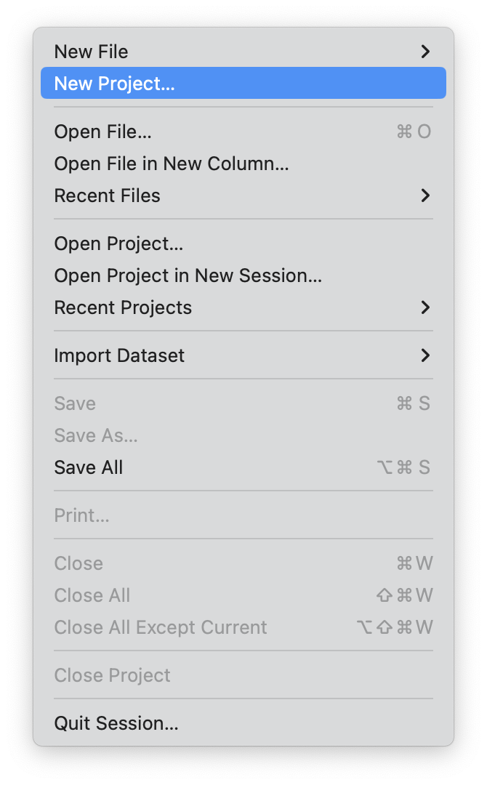
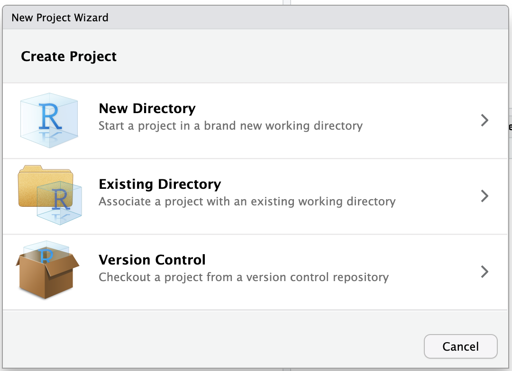
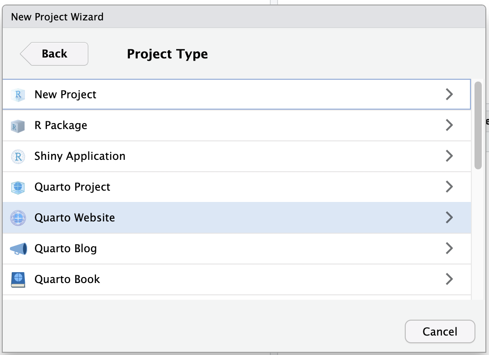
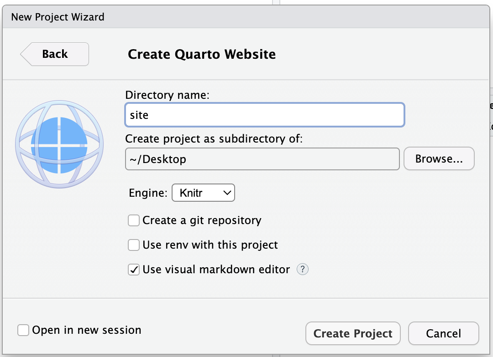

Construindo seu site com Quarto: do alicerce ao acabamento

E aí, futuro construtor digital! 👷♂️ Se você quer erguer seu próprio site profissional mas acha que precisa ser um expert em programação, prepare-se para uma revolução: o Quarto é como ter uma equipe completa de arquitetos e engenheiros civis - só que em formato de software!
📐 Por que Quarto é o construtor ideal?
Assim como um bom projeto de engenharia segue etapas claras - da fundação ao acabamento - criar um site com Quarto mantém essa lógica organizada:
Planta baixa inteligente: Estrutura pronta, só falta seu toque pessoal
Equipe multidisciplinar: Suporta R, Python e Julia como diferentes especialistas
Escalável: Desde um “sobrado digital” até arranha-céus web complexos
O melhor? Você não precisa ser “engenheiro sênior” em programação. Se já usou RMarkdown (sua “betoneira básica”), vai se sentir em casa com as ferramentas profissionais do Quarto!
🧰 Kit básico do construtor digital
Antes de colocar a mão na massa (ou melhor, no código!), você vai precisar do kit essencial para construir seu site com Quarto. Pense nisso como aquela lista de materiais que todo mestre de obras checa antes de começar uma construção.
📦 O que você precisa?
Antes de começar, confira sua lista de materiais essenciais:
| Ferramenta | Equivalente na Construção | Função |
|---|---|---|
| R + RStudio | Grua e central de comando | Seu ambiente principal de trabalho |
| Git | Arquivo de projetos atualizado | Controle de versão |
| GitHub | Terreno para construção | Hospedagem gratuita |
💡 Dica do Mestre de Obras: Git/GitHub parece complexo? É como aprender a usar um nível a laser - assustador no começo, mas vira segundo natureza. Confira este [guia básico] para começar.
Confira meu post para começar.
🔨 Lançando os fundamentos
Vamos iniciar nossa obra em 3 etapas simples:
Preparando o terreno:
Abra o RStudio
No canto superior direito, clique no menu suspenso “Project: (None)”


- Selecione “New Project…” → “New Directory” → “Quarto Website

Aprovando o projeto:
Nomeie seu canteiro digital (ex: “site”)
Defina o local da obra (pasta do computador)
Iniciando a construção:
- Clique em “Create Project” e… obra iniciada!

Pronto!
O RStudio criará automaticamente todos os arquivos básicos necessários para seu site Quarto.
✅ Dica: Assim como um bom alicerce evita rachaduras, um nome bem definido evita retrabalhos futuros.
🏢 Estruturando seu prédio digital
Seu projeto vem com a estrutura básica já organizada:
| Componente | Função | Importância |
|---|---|---|
index.qmd |
Fachada principal | ⚠️ Nunca renomeie! |
about.qmd |
Área institucional | Totalmente personalizável |
_quarto.yml |
Projeto arquitetônico | Controla toda a estrutura |
styles.css |
Acabamentos visuais | Opcional, mas recomendo! |
_site/ |
Obra concluída | Não edite manualmente! |
🚪 ️index.qmd️ sua fachada digital
O arquivo index.qmd é a porta de entrada do seu site — ele define a primeira impressão que seus visitantes terão! ✨
Obrigatório: Mantenha sempre esse nome
Flexível: Misture Markdown, HTML e código
`index.qmd`
---
title: "site"
---🛋️️` about.qmd: Sseu espaço personalizável
Se o index.qmd é a porta de entrada do seu site, o about.qmd é aquele cômodo que você pode redecorar do zero! 🎨✨
Diferente da página principal (que precisa manter o nome index.qmd), essa aqui é totalmente flexível – você pode:
Renomeie como quiser (
portfolio.qmd,servicos.qmd)Crie qualquer tipo de conteúdo
🏗quarto.yml: o projeto executivo
Se o seu site fosse uma casa, o _quarto.yml seria a planta arquitetônica que define toda a estrutura – desde os cômodos (páginas) até os acabamentos (temas e estilos). O _quarto.yml controla:
Estrutura principal (menu de navegação, rodapé, barras laterais)
Aparência global (tema, cores, fontes)
Configurações técnicas (diretórios, plugins, comportamentos)
Por padrão, o arquivo é segue esta estrutura:
`quarto.yml`
project:
type: website
website:
title: "mysite"
navbar:
left:
- href: index.qmd
text: Home
- about.qmd
format:
html:
theme: cosmo
css: styles.css
toc: true🎨 styles.css: os acabamentos
Pense no styles.css como a caixa de tintas do seu site - é aqui que você define cores, fontes e todos os detalhes visuais que dão personalidade ao seu projeto. Enquanto o _quarto.yml cuida da estrutura, esse arquivo é responsável pelo visual!
🚧 A pasta️ \_site/️: sua obra entregue
Pense nela como o prédio pronto após a vistoria:
Contém toda a estrutura convertida para HTML
Não edite manualmente! (será sobrescrito)
Atualize sempre os arquivos-fonte e rode
quarto render
🚀 Próximos passos: sua obra vai ganhar vida!
E agora? Você já tem o projeto aprovado, a estrutura levantada e os acabamentos definidos. Falta só o grande lançamento!
No próximo meu próximo post, vou te mostrar como:
🔍 Explorar cada um dos arquivos essenciais - entendendo a função de cada “peça” da sua construção digital
✨ Publicar seu site gratuitamente no GitHub Pages - seu “habite-se” digital
🌐 Registrar seu endereço profissional (seunome.github.io)